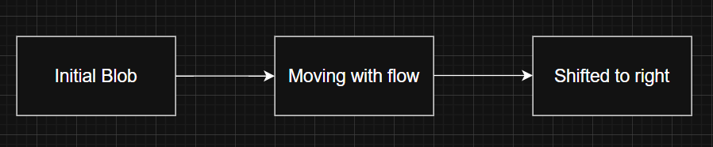
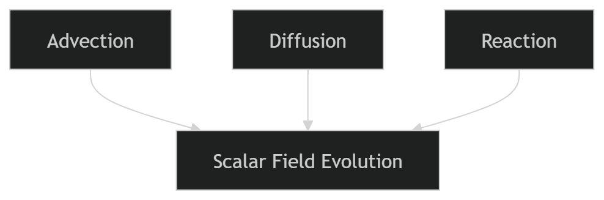

Project 1: Reactive Scalar Transport Solver
Objective
To develop a 2D finite-volume CFD solver for scalar transport including advection, diffusion, and reaction using Basilisk.
This project implements a simplified species transport solver, commonly used in CFD to simulate transport and reaction of scalar quantities.
Problem Description
A scalar concentration field (C) is initialized as a Gaussian blob and transported in a uniform velocity field.
The governing equation solved is:
∂C/∂t + ∇·(uC) = D∇²C − kC
The scalar undergoes:
- Advection (transport by flow)
- Diffusion (spreading due to gradients)
- Reaction (decay over time)
In A NUTSHELL:--
Imagine you drop a drop of ink into flowing water.
Three things will happen:
- The ink will move with the water → this is Advection
- The ink will spread out and mix → this is Diffusion
- The ink will fade or disappear over time → this is Reaction
This project simulates exactly this process using mathematics and numerical methods.
What is the Scalar here?
A scalar is simply a quantity that has a value at every point in space.
In this project:
- C represents concentration (like ink density)
- Each point in the domain has a value of C
What is the Computational Domain here?
We simulate the problem inside a square region:
- This is divided into many small cells (grid)
- Each cell stores a value of concentration
What is the Gaussian Blob here?
The initial condition is a "blob" of concentration.
Mathematically:
C = exp(-100r²)
This creates:
- High concentration at center
- Smooth decrease outward
👉 This gives a nice visible shape to track
What Does the Solver Do?
At every time step:
- Moves the scalar → Advection
- Spreads it → Diffusion
- Reduces it → Reaction
This process repeats until the final time.
Why is This Important?
This type of simulation is used in:
- Pollution spreading in air/water
- Heat transfer problems
- Combustion modeling
- HVAC airflow analysis
Simple Summary
- We start with a blob
- It moves, spreads, and fades
- The computer calculates this step by step
Technically,
Advection (Transport by Flow)

The scalar is transported by the velocity field without changing its shape significantly.Diffusion (Spreading)
The scalar spreads from regions of high concentration to low concentration, smoothing the distribution.
Reaction (Decay)
The scalar concentration decreases over time due to a decay process.
Combined Effect

Key Insight
The scalar field evolution depends strongly on both physical parameters and the numerical scheme used, which affects stability and accuracy.